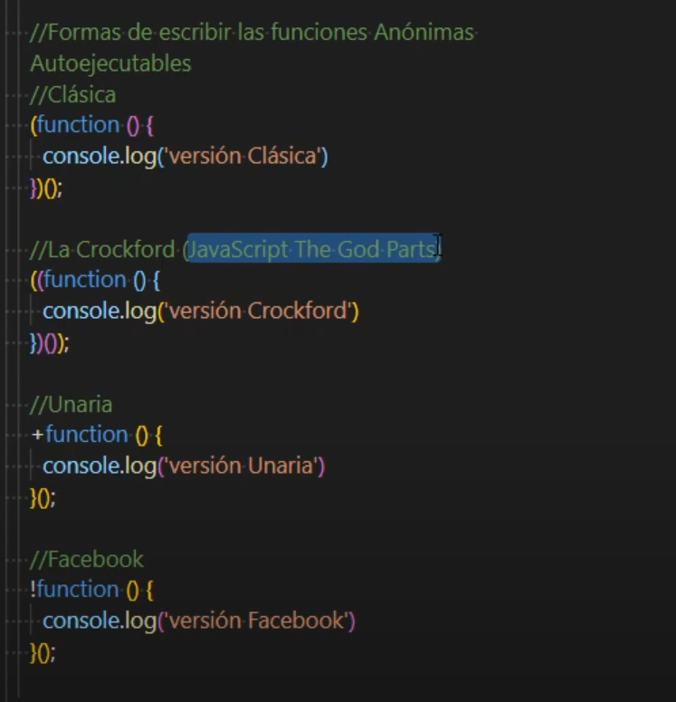

Patro muy utilizado para la ejecución de código invoke function express, es una función en la que se engloba todo el código que quieres ejecutar.
No solo las definimos, si no que las estamos ejecutando al momento de crearlas, esta protegida de invocación de librerias secundaria, dado que esta autocontenida.
Te permite pasar parametros de una manera más amigable.
